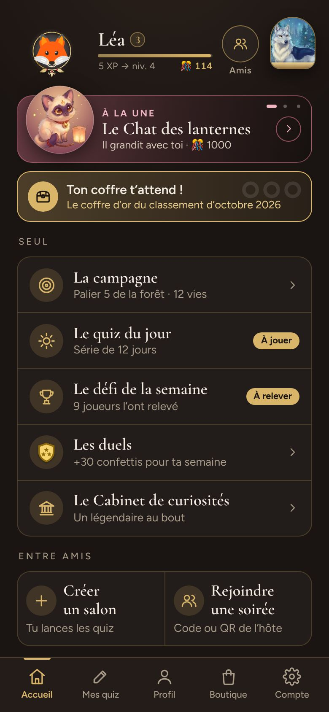

Les Divins
et treize autres, tout aussi secrets
Personne ne sait ce qui le fait descendre.
L'énigme
Pas encore descendu. Personne ne sait ce qui le fait descendre.
Sa phrase
Maquette : rien ici n'est servi par FiestApp. La phrase de Chronos est inventée et ne dit pas sa règle. Les énigmes sont recopiées mot pour mot d'Un million d'énigmes, charades et logogriphes (Hilaire Le Gai, Passard, 1858), domaine public, transcrit par Wikisource.